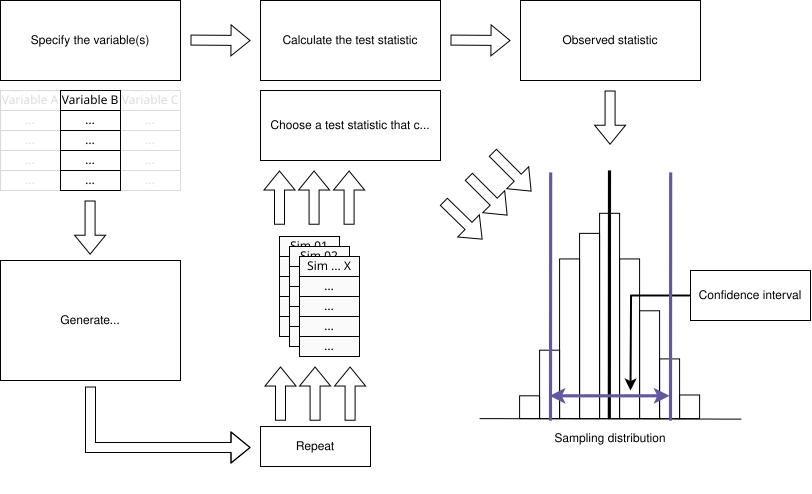
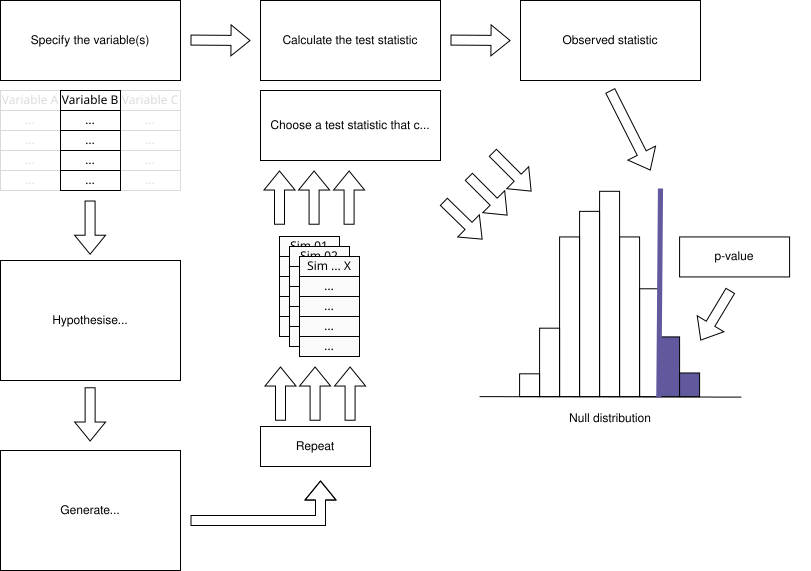
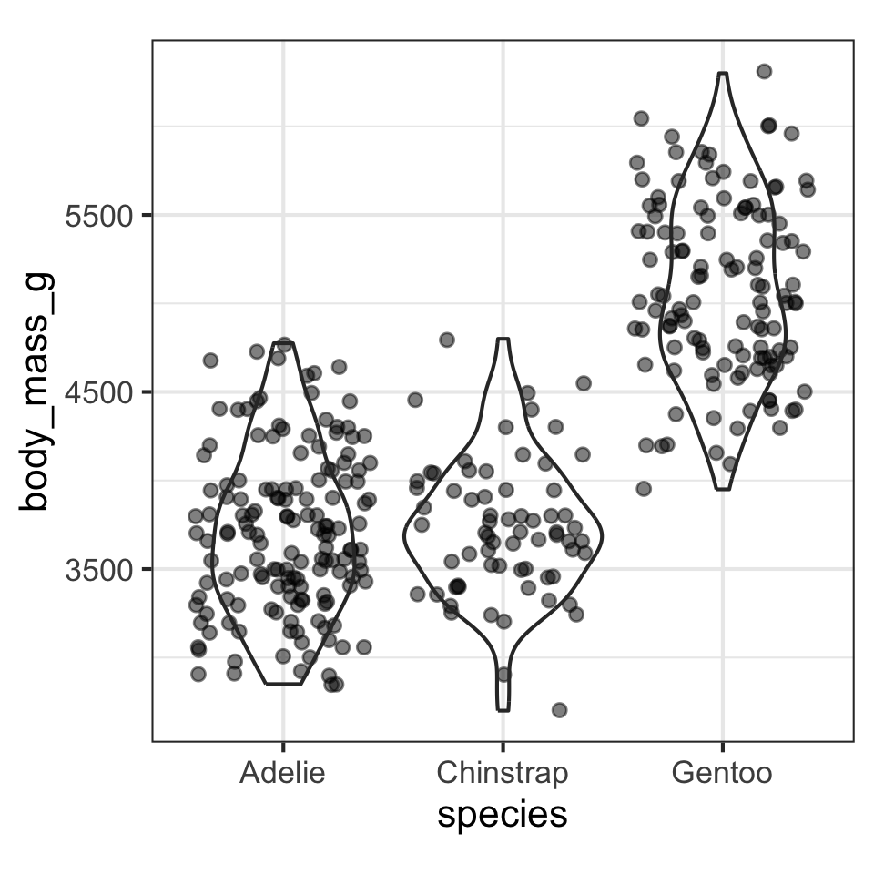
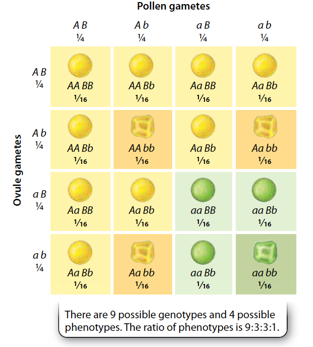

Lecture 5
Monday 30th March, 2026

The proportion of Adelie penguins on Biscoe was estimated to be: 0.262
The proportion of Adelie penguins on Biscoe was estimated to be: 0.262 (95% CI: 0.196 - 0.327)
The proportion of Adelie penguins on Biscoe was estimated to be: 0.262 (95% CI: 0.196 - 0.327)
01:30
Adelie penguins are 1366 grams lighter than Gentoo penguins on Biscoe.
Adelie penguins are 1366 grams lighter than Gentoo penguins on Biscoe.
Adelie penguins are 1366 grams (95% 1199 - 1540 grams) lighter than Gentoo penguins on Biscoe.
01:30
Null hypothesis
Alternative hypothesis:
CI approach
Null hypothesis testing approach:
CI approach
Null hypothesis testing approach:
Null hypothesis
Alternative hypothesis:

p = 0.01
p = 0.01
What should I conclude? Why?
01:30

\[ F = \frac{\text{Variance 1}}{\text{Variance 2}} \]
\[ F = \frac{\text{Mean variance between-group}}{\text{Mean variance within-group}} \]

\[ \chi^2 = \sum \frac{(Observed_i - Expected_i)^2}{Expected_i} \]